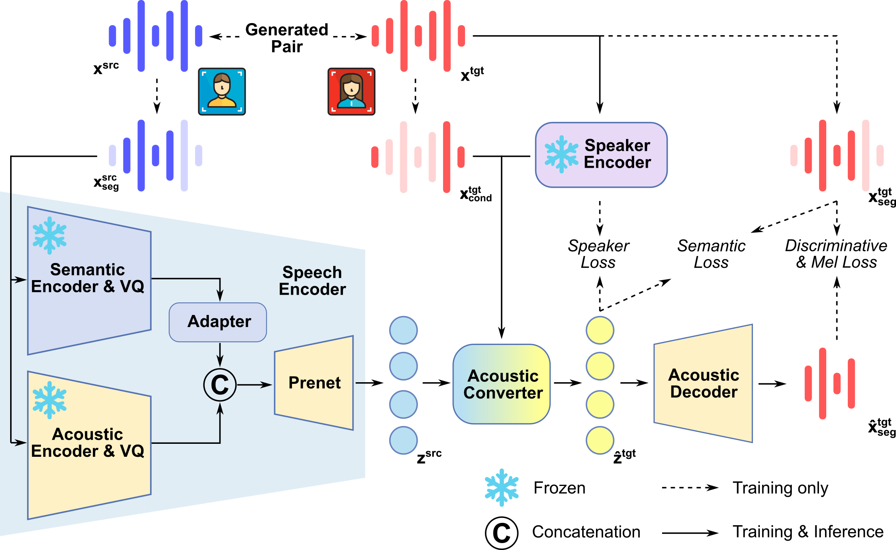

X-VC: Zero-shot Streaming Voice Conversion in Codec Space
Anonymous Authors
Abstract Zero-shot voice conversion (VC) aims to convert a source utterance into the voice of an unseen target speaker while preserving its linguistic content. Although recent systems have improved conversion quality, building zero-shot VC systems for interactive scenarios remains challenging because high-fidelity speaker transfer and low-latency streaming inference are difficult to achieve simultaneously. In this work, we present X-VC, a zero-shot streaming VC system that performs one-step conversion in the latent space of a pretrained neural codec. X-VC uses a dual-conditioning acoustic converter that jointly models source codec latents and frame-level acoustic conditions derived from target reference speech, while injecting utterance-level target speaker information through adaptive normalization. To reduce the mismatch between training and inference, we train the model with generated paired data and a role-assignment strategy that combines standard, reconstruction, and reversed modes. For streaming inference, we further adopt a chunkwise inference scheme with overlap smoothing that is aligned with the segment-based training paradigm of the codec. Experiments on Seed-TTS-Eval show that X-VC achieves the best streaming WER in both English and Chinese, strong speaker similarity in same-language and cross-lingual settings, and substantially lower offline real-time factor than the compared baselines. These results suggest that codec-space one-step conversion is a practical approach for building high-quality low-latency zero-shot VC systems.

This page is for research demonstration purposes only.
Streaming Zero-shot Voice Conversion
| Source | Target | X-VC (Ours) | MeanVC | Seed-VC |
|---|---|---|---|---|
References
Seed-VC: Songting Liu. 2024. Zero-shot Voice Conversion with Diffusion Transformers. arXiv:2411.09943 [cs.SD] https://arxiv.org/abs/2411.09943
MeanVC: Guobin Ma, Jixun Yao, Ziqian Ning, Yuepeng Jiang, Lingxin Xiong, Lei Xie, and Pengcheng Zhu. 2025. MeanVC: Lightweight and Streaming Zero-Shot Voice Conversion via Mean Flows. arXiv:2510.08392 [eess.AS] https://arxiv.org/abs/2510.08392